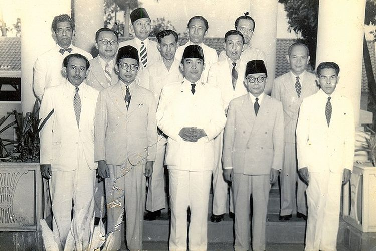
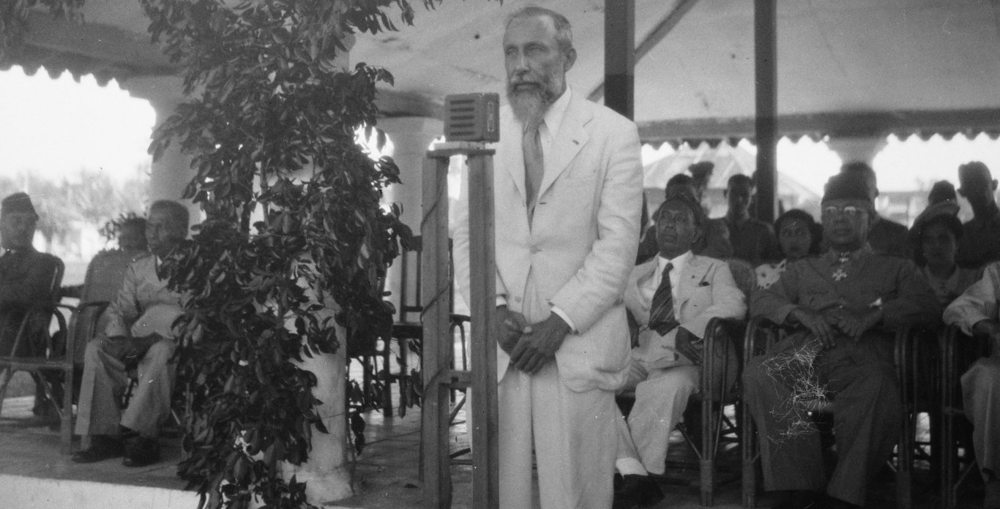
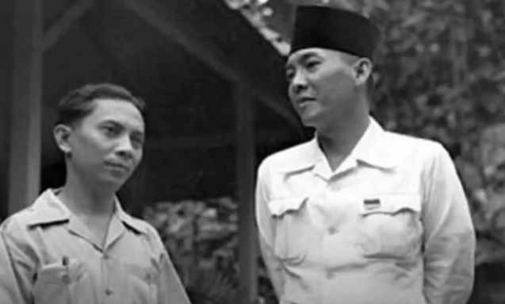
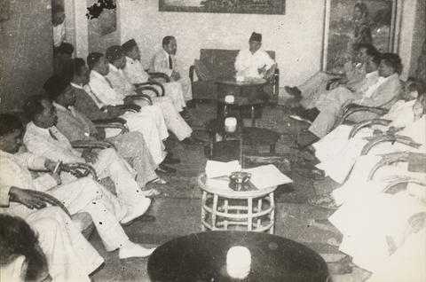
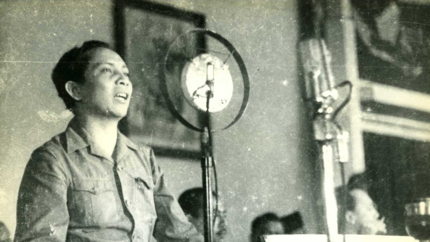
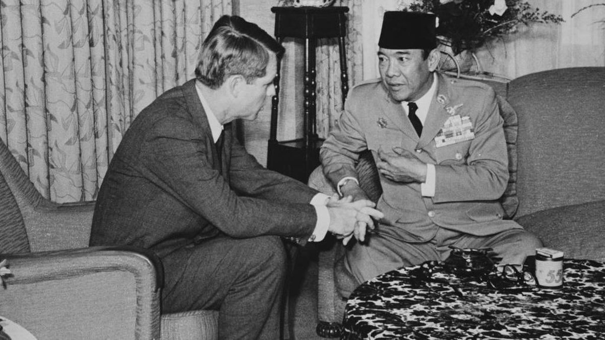
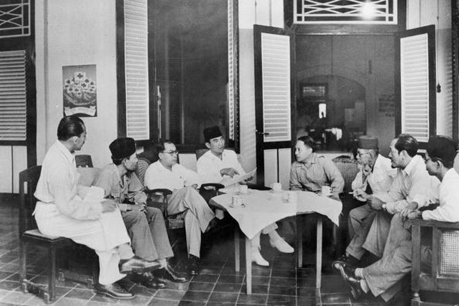
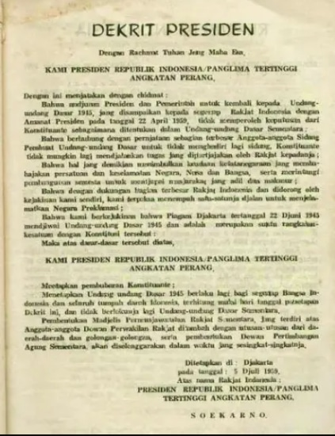

https://asset.kompas.com/crops/plEocWuoM1RV
7BiTvOEoeLhy3tY=/23x3:800x521/750x500/da
ta/photo/2022/10/28/635b57e30cba6.jpg
Era Demokrasi Liberal (1950-1959) yang dikenal pula dengan Era Demokrasi Parlementer adalah
era ketika Presiden Soekarno memerintah menggunakan konstitusi Undang-Undang Dasar Sementara Republik Indonesia 1950.
Sebelum Era Demokrasi Parlementer, terdapat periode 1945-1950. Periode ini dimulai dari Proklamasi Kemerdekaan
Republik Indonesia pada tanggal 17 Agustus 1945 yang menjadi tonggak bagi perubahan kehidupan bangsa dan negara Indonesia.
Pada periode ini, nilai persatuan dan kesatuan masih tinggi ketika menghadapi bangsa Belanda yang masih ingin menjajah
di tanah Indonesia. Pada 24 Agustus 1945, kesepakatan sipil dibuat antara Inggris dan Belanda untuk mengkolonisasi kembali
Indonesia. Tentara Inggris yang bertindak sebagai wakil Sekutu tiba di Jakarta pada 29 September 1945, bersama
Dr. Charles van der Plas, wakil Belanda pada Sekutu. Tentara sekutu ini diboncengi oleh Dr. Hubertus J. van Mook,
pimpinan NICA (Netherland Indies Civil Administration—Pemerintahan Sipil Hindia Belanda).

https://assets-global.website-files.com/61af2708
84f7a0580d35618e/6499399494db273e634762
19_228-charles-olke-van-der-plas.jpg
Setelah Tentara Inggris dan NICA tiba di Indonesia, yang saat itu baru mencapai kemerdekaan,
terjadi banyak pertempuran.
- Pertempuran Bojong Kokosan, di Bojong Kokosan, Sukabumi pada 9 Desember 1945, dipimpin Letkol (TKR) Eddie Sukardi.
- Pertempuran Lima Hari, di Semarang pada 15–19 Oktober 1945 (melawan Jepang).
- Peristiwa 10 November, di daerah Surabaya pada 10 November 1945, dipimpin Kolonel (TKR) Sungkono.
- Pertempuran Medan Area, di daerah Medan dan sekitarnya pada 10 Desember 1945 hingga 10 Agustus 1946,
dipimpin oleh Kolonel (TKR) Achmad Tahir.
- Palagan Ambarawa, di daerah Ambarawa, Semarang pada 12–15 Desember 1945, dipimpin Kolonel (TKR) Sudirman.
- Pertempuran Lengkong, di daerah Lengkong, Serpong pada 25 Januari 1946, dipimpin oleh Mayor (TKR) Daan Mogot.
- Bandung Lautan Api, di daerah Bandung pada 23 Maret 1946, atas perintah Kolonel (TRI) A.H. Nasution.
- Pertempuran Selat Bali, di Selat Bali pada April, dipimpin oleh Kapten Laut (TRI) Markadi.
- Pertempuran Margarana, di Margarana, Tabanan, Bali pada 20 November 1946, dipimpin oleh Letkol (TRI)
I Gusti Ngurah Rai.
- Pembantaian Westerling, di Sulawesi Selatan pada 11 Desember 1946 hingga 10 Februari 1947, akibat dari
perburuan terhadap Robert Wolter Monginsidi.
Perubahan Sistem Pemerintahan
Satu faktor yang mendorong pergeseran sistem pemerintahan dari presidensial ke parlementer adalah pernyataan
Van Mook yang menolak berunding dengan Soekarno. Republik Indonesia menyadari tindakan ini, jadi pada tanggal
14 November 1945, sehari sebelum kedatangan Sekutu, Sutan Syahrir menggantikan Soekarno sebagai pemimpin pemerintahan
republik. Syahrir adalah seorang sosialis yang dianggap cocok untuk bertanggung jawab atas diplomatik, yang sesuai
dengan meningkatnya partai sosialis di Belanda.

https://i0.wp.com/beritajatim.com/wp-content/u
ploads/2020/08/Syarir-dan-Soekarno.jpg?w=63
7&ssl=1
Terjadinya perubahan besar dalam sistem pemerintahan Republik Indonesia (dari sistem Presidensial menjadi
sistem Parlementer) memungkinkan perundingan antara pihak RI dan Belanda. Dalam pandangan Inggris dan Belanda,
Sutan Sjahrir dinilai sebagai seorang moderat, seorang intelek, dan seorang yang telah berperang selama pemerintahan Jepang.
Ketika Syahrir mengumumkan kabinetnya pada 15 November 1945, Letnan Gubernur Jendral van Mook mengirim kawat kepada
J.H.A. Logemann, Menteri Urusan Tanah Jajahan (Minister of Overseas Territories—Overzeese Gebiedsdelen), yang berkantor
di Den Haag: "Mereka sendiri [Sjahrir dan kabinetnya] dan bukan Soekarno yang bertanggung jawab atas jalannya keadaan."
"Mereka bukan kolaborator seperti Soekarno, presiden mereka, kita tidak akan pernah dapat berurusan dengan Dr. Soekarno,
kita akan berunding dengan Syahrir," kata Logemann sendiri dalam siaran radio BBC pada 28 November 1945. Bahkan Logemann
menulis kepada Van Mook pada 6 Maret 1946 bahwa Soekarno persona non grata.
Seminggu sebelum perubahan pemerintahan, Den Haag mengumumkan dasar rencananya. Ini memberi Republik Indonesia alasan
politis untuk mengubah sistem pemerintahan dari Presidensial menjadi Parlementer. Pada 4 Desember 1945, Syahrir menyatakan
bahwa pemerintahnya menerima tawaran ini dengan syarat Belanda mengakui Republik Indonesia, meskipun Ir Soekarno menolaknya.
|

https://elshinta.com/asset/upload/article/2022/n
ovember/3454_ELSHINTADOTCOM_20221112
_0051_141.jpg
Munculnya sistem parlementer di Indonesia karena jatuhnya kabinet Presidensial Pertama pada 14 November 1945 yang disebabkan
oleh keluarnya Maklumat Wakil Presiden No. X/1945 pada 16 Oktober 1945 dan diikuti kemudian oleh Maklumat Pemerintah pada 3
November 1945 yang berisi tentang seruan untuk mendirikan partai-partai politik di Indonesia.
Adapun isi dari Maklumat 14 November 1945, yaitu; "Pemerintah Republik Indonesia setelah mengalami ujian-ujian yang hebat
dengan selamat, dari tingkatan yang pertama dari upaya menegakkan diri, merasa bahwa saat ini sudah tepat untuk menjalankan
macam-macam tindakan darurat untuk menyempurnakan tata usaha negara menjadi susunan ketenangan. Yang terpenting dalam
perubahan-perubahan susunan kabinet baru itu ialah, bahwa tanggung jawab adalah di tangan menteri".
Tujuan Maklumat 14 November 1945 adalah untuk menjelaskan bagaimana pemerintahan Indonesia berubah dari sistem presidensial
ke sistem parlementer. Presiden bertindak sebagai kepala negara dalam sistem parlementer ini, dan perdana menteri bertindak
sebagai kepala pemerintahan. Tujuan lain dari sistem parlementer adalah untuk meningkatkan kebebasan demokrasi dibandingkan
dengan sistem presidensial, di mana presiden memiliki otoritas absolut.
Sistem Parlementer
Pernyataan Badan Pekerja Komite Nasional Indonesia Pusat (BPKNIP) tentang perubahan pertanggungjawaban Menteri kepada
Parlemen—dalam hal ini Komite Nasional Indonesia Pusat (KNIP)—berlanjut dari Maklumat Pemerintah. Pada tanggal 14 November
1945, Presiden Soekarno menyetujui usulan BPKNIP. Oleh karena itu, sistem pemerintahan Indonesia secara otomatis berubah
menjadi parlementer daripada presidensial.

https://elshinta.com/asset/upload/article/2023/n
ovember/6644_ELSHINTADOTCOM_20231111
_sutan-sjahrir-sidang-pleno-1947_ratio-16x9.jpg
Sistem pemerintahan parlementer yang pertama di Indonesia dimulai pada 14 November 1945 sampai 12 Maret 1946 di bawah
pimpinan Perdana Menteri Pertama Indonesia, Sutan Syahrir, disebut juga sebagai Kabinet Sjahrir I. Langkah mengubah sistem
pemerintahan Indonesia dari presidensil ke parlementer dianggap sebagai suatu langkah politik ideologi Sjahrir yang menganut
sosial-demokrat dan mendukung sistem demokrasi Barat yang parlemennya kuat.
Kelebihan Sistem Pemerintahan Parlementer:
- Pembuat kebijakan dapat ditangani secara cepat karena mudah terjadi penyesuaian pendapat antara eksekutif dan legislatif.
Hal ini karena kekuasaan eksekutif dan legislatif berada pada satu partai atau koalisi partai.
- Garis tanggung jawab dalam pembuatan dan pelaksanaan kebijakan publik jelas.
- Adanya pengawasan yang kuat dari parlemen terhadap kabinet sehingga kabinet menjadi berhati-hati dalam menjalankan
pemerintahan.
- Pembuatan keputusan memakan waktu yang cepat.
Kekurangan Sistem Pemerintahan Parlementer:
- Kedudukan badan eksekutif atau kabinet sangat tergantung pada mayoritas dukungan parlemen sehingga sewaktu-waktu
kabinet dapat dijatuhkan oleh parlemen.
- Kelangsungan kedudukan badan eksekutif atau kabinet tidak bisa ditentukan berakhir sesuai dengan masa jabatannya
karena sewaktu-waktu kabinet dapat bubar.
- Masa pemilihan umum dapat berubah-ubah dengan jangka waktu tertentu.
- Kabinet dapat mengendalikan parlemen. Hal itu terjadi apabila para anggota kabinet adalah anggota parlemen dan berasal
dari partai mayoritas. Karena pengaruh mereka yang besar diparlemen dan partai, anggota kabinet dapat menguasai parlemen.
- Parlemen menjadi tempat kaderisasi bagi jabatan-jabatan eksekutif. Pengalaman mereka menjadi anggota parlemen dimanfaatkan
dan menjadi bekal penting untuk menjadi menteri atau jabatan eksekutif lainnya.

https://awsimages.detik.net.id/community/media
/visual/2021/08/17/potret-sukarno-bapak-bangs
a-yang-disegani-tokoh-tokoh-dunia-4_169.jpeg
?w=1200
Karena memiliki landasan konstitusional, yaitu Undang-Undang Dasar Sementara 1949 dan 1950, demokrasi parlementer di
Indonesia semakin kuat. Undang-undang ini menetapkan lembaga eksekutif yang terdiri dari presiden sebagai kepala negara
konstitusional dan menteri, yang masing-masing bertanggung jawab politik di bawah perdana menteri sebagai kepala pemerintahan
sehari-hari. Setelah itu, koalisi partai-partai di parlemen membentuk kabinet pemerintahan, tetapi koalisi antar partai
sering runtuh, menggoyahkan kabinet pemerintahan.
|
Akhirnya, banyak kabinet pemerintahan di masa demokrasi parlementer di Indonesia runtuh dengan cepat karena koalisi partai
seringkali tidak utuh sampai selesai, dan partai yang menjadi oposisi seringkali menunjukkan sikap kritik destruktif dengan
mengangkat sisi negatif partai penguasa, menunjukkan bahwa partai politik di masa itu belum dewasa.

https://asset.kompas.com/crops/SYKH20i7AhDs
wFvE-78mDTY7IsA=/0x38:594x434/750x500/data/ph
oto/2023/05/10/645ab07bbd1fb.jpg
Tercatat ada tujuh kabinet pada masa ini:
- Kabinet Natsir
Kabinet pertama yang dibentuk setelah pembubaran negara Republik Indonesia Serikat, dan kembali
menjadi Negara Kesatuan Republik Indonesia. Kabinet ini diumumkan pada 6 September 1950 dan bertugas sejak 7 September
1950 hingga 21 Maret 1951.
- Kabinet Sukiman-Suwirjo
Kabinet kedua setelah pembubaran negara Republik Indonesia Serikat. Kabinet ini diumumkan
pada 26 April 1951 dan bertugas pada masa bakti 27 April 1951 hingga 23 Februari 1952.
- Kabinet Wilopo
Kabinet ketiga setelah pembubaran negara Republik Indonesia Serikat. Kabinet ini diumumkan pada 1
April 1952 dan bertugas pada masa bakti 3 April 1952 hingga 3 Juni 1953.
- Kabinet Ali Sastroamidjojo I
Kabinet keempat setelah pembubaran negara Republik Indonesia Serikat. Kabinet ini
diumumkan pada 30 Juli 1953 dan bertugas pada masa bakti 1 Agustus 1953 hingga 24 Juli 1955.
- Kabinet Burhanuddin Harahap
Kabinet koalisi yang terdiri dari beberapa partai dan hampir merupakan kabinet Nasional,
karena jumlah partai yang tergabung dalam koalisi kabinet ini semua berjumlah 13 partai.Kabinet ini diumumkan pada 11
Agustus 1955 dan bertugas sejak 12 Agustus 1955 hingga 3 Maret 1956.
- Kabinet Ali Sastroamidjojo II
Kabinet ini diumumkan pada 20 Maret 1956 dan bertugas sejak 24 Maret 1956 hingga 14
Maret 1957.
- Kabinet Djuanda / Kabinet Karya
Kabinet terakhir pada masa demokrasi parlementer. Kabinet ini diumumkan pada 8 April
1957 dan bertugas sejak 9 April 1957 hingga 6 Juli 1959.
Puncak dari ketidakstabilan politik pada era Demokrasi Parlementer adalah gagalnya anggota Konstituante dalam membentuk
suatu undang-undang dasar yang baru bagi Indonesia. Kegagalan anggota Konstituante itu disebabkan karena para anggota
Konstituante yang terdiri dari partai-partai politik dalam parlemen tidak pernah bekerjasama untuk mencapai konsensus
membentuk undang-undang dasar yang baru. Kegagalan Konstituante itu yang kemudian akhirnya mendorong Presiden Soekarno
mengemukakan apa yang disebut sebagai “Konsepsi Presiden” pada 21 Februari 1957, dalam konsepsi itu Soekarno mengatakan
bahwa Demokrasi Parlementer adalah Demokrasi Barat dan harus diganti.

https://ips.pelajaran.co.id/wp-content/uploads
/2020/01/Dekrit-Presiden-5-Juli-1959.jpg
Akhirnya, puncak dari kekisruhan politik saat itu berakhir saat, Presiden Soekarno mengeluarkan Dekrit Presiden 5 Juli
1959 yang menyatakan bahwa konstitusi Indonesia kembali pada Undang-Undang Dasar 1945 yang sekaligus menyudahi kabinet
Parlementer terakhir yang dipimpin oleh Ali Sastroamidjojo atau yang disebut sebagai Kabinet Ali II dan seluruh sistem
Demokrasi Parlementer di Indonesia.
Isi dari Dekrit Presiden 5 Juli 1959 antara lain:
- Menetapkan pembubaran Konstituante.
- Menetapkan kembali UUD 1945 sebagai konstitusi Indonesia dan tidak berlaku lagi UUDS 1950.
- Membentuk Majelis Permusyawaratan Rakyat Sementara (MPRS) yang terdiri dari anggota DPR ditambah dengan utusan
golongan dari daerah.
- Membentuk Dewan Pertimbangan Agung Sementara (DPAS).
Sisi positif dari adanya dekrit ini:
- Memberikan pedoman yang jelas bagi kelangsungan negara melalui perintah untuk kembali ke UUD 1945
- Menyelamatkan negara dari disintegrasi dan krisis politik yang berkepanjangan;
- Memprakarsai pembentukan lembaga-lembaga tinggi negara (MPRS dan DPAS) yang selama masa Demokrasi Liberal
tertunda pembentukannya.
Dekrit Presiden 5 Juli 1959 yang dikeluarkan Presiden Soekarno ialah dekrit yang mengakhiri masa parlementer.
Masa sesudah ini lazim disebut masa Demokrasi Terpimpin.
|